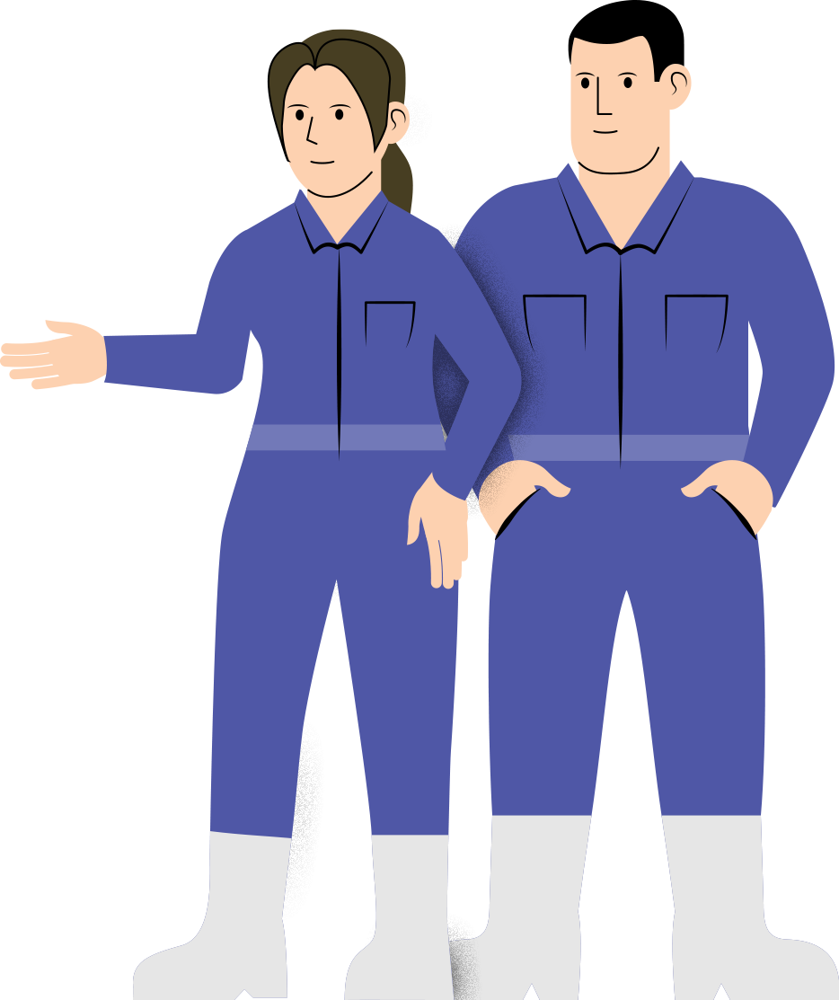
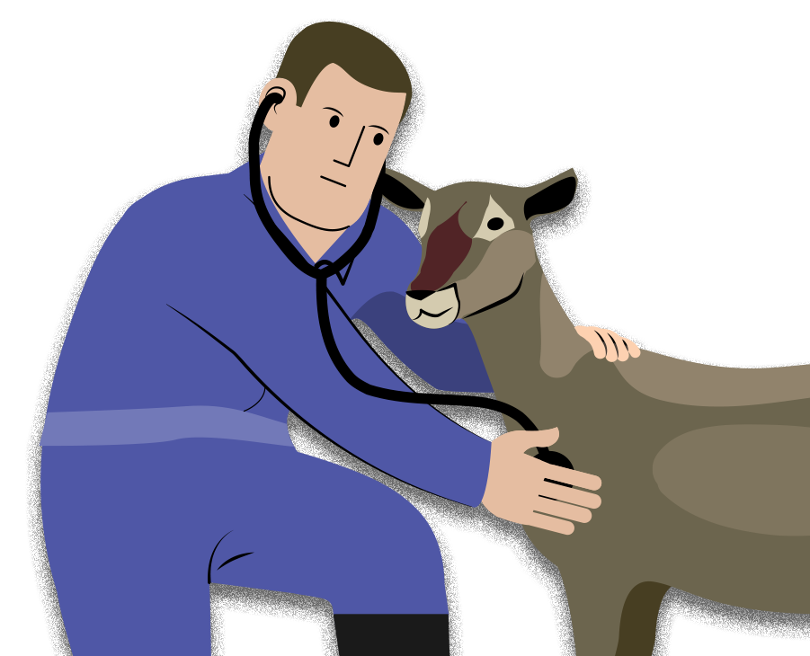
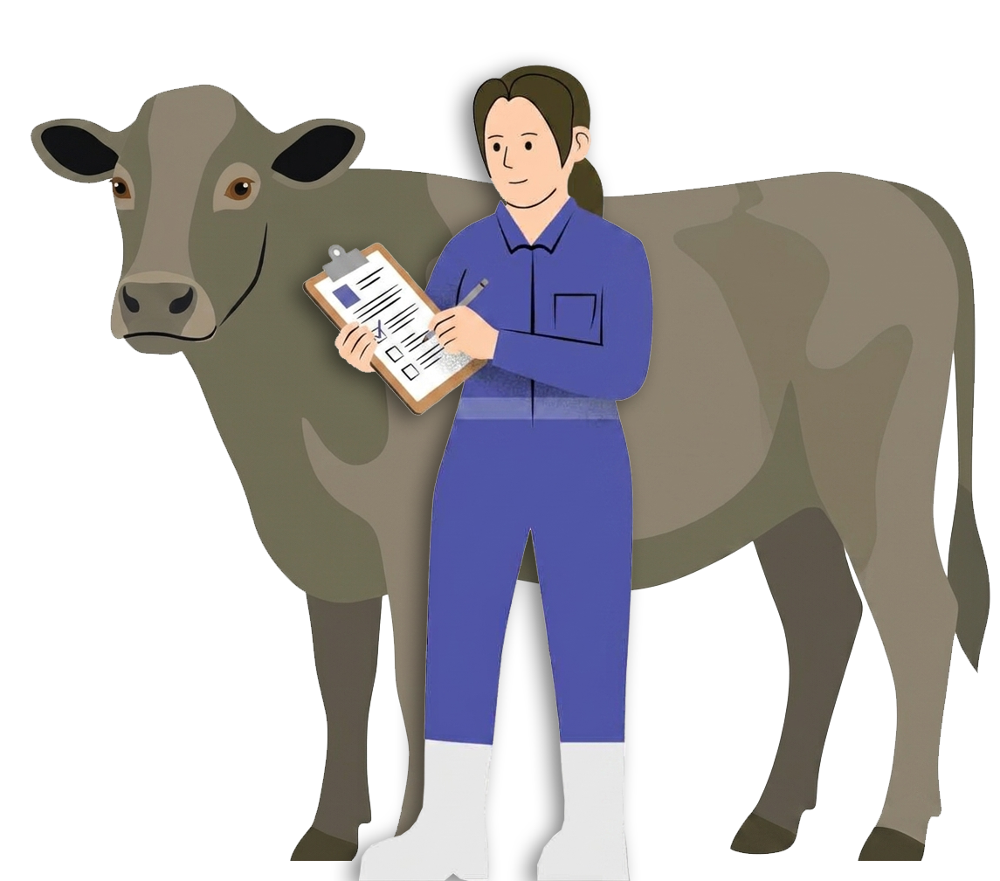
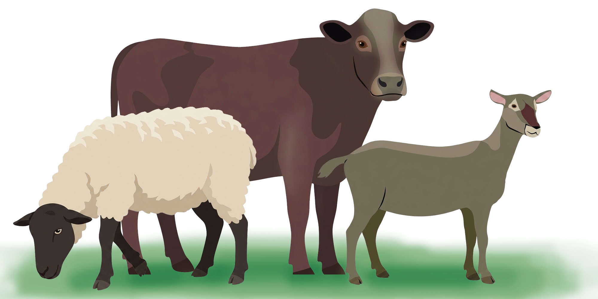

Sobre este proyecto
"Casos clínicos reales en bovinos, ovinos, caprinos y búfalos de agua, desde una perspectiva multidisciplinaria exhaustiva basada en evidencias para la impartición de asignaturas en la licenciatura en medicina veterinaria y zootecnia" es un repositorio donde los autores abordarán casos clínicos reales vistos en campo y práctica.

Dentro de la enseñanza de la medicina veterinaria es de crucial importancia el abordaje del razonamiento clínico y las metodología de diagnóstico en cualquier especie animal, y la base para ir desarrollando esa estructura de pensamiento en los estudiantes es a través del uso de los casos clínicos. Gracias al avance de las tecnologías, en la actualidad existen muchos simuladores que permiten presentar escenarios de casos clínicos y son muy útiles dentro del aula, pero éstos se necesitan alimentar de información real de lo que sucede con los animales enfermos y muchas veces es parcial la información que se presenta. Aunado a esto, existen muchas áreas dentro del programa de estudios de la licenciatura en MVZ que pueden hacer uso de casos clínicos para la enseñanza de sus contenidos y son áreas que no están en constante contacto con los rumiantes para que puedan tener acceso a construir casos clínicos y son las áreas como patología clínica, microbiología, parasitología ente otros y si los hay, están estructurados desde una mirada por campo de conocimiento y no do forma completa multidisciplinaria.

Este proyecto contempla la gran relevancia de generar casos clínicos en rumiantes que sean desde la metodología exhaustiva y multidisciplinaria lo que es innovador y no existe otro igual en la FMVZ y servirá para que el estudiante aprenda a potenciar su capacidad de análisis y actuar según indica la experiencia clínica diaria, que en definitiva se basa en la aplicación de estrictos y actualizados protocolos profesionales. Además, la documentación y escritura de los mismos hace que los estudiantes dediquen tiempo a practicar la escritura de historias clínicas que son fuente de información clínica de gran valor y con evidencia científica. Esto servirá para integrar todos los elementos del razonamiento clínico y llevar a cabo una adecuada elección de las pruebas de laboratorio. En cada caso clínico, se llevarán a cabo pruebas del laboratorio de cajón (hemograma, bioquímica, medición de proteínas y urianálisis) y dependiendo el caso, se harán pruebas de laboratorio ya sea bacteriológico, parasitológico y viral para llegar al diagnóstico definitivo y el diseño de estos casos será encaminado a mostrar en su conjunto las partes del razonamiento clínico por lo que será un gran material de apoyo para la enseñanza de las asignaturas relacionadas con los rumiantes, patología clínica, microbiología, parasitología y virología de la FMVZ y ser un banco de información para que simuladores que se encuentran en la facultad se nutran de éstos.
El caso clínico es una potente herramienta de formación para estudiantes de medicina veterinaria, debido a que ofrece importantísimas oportunidades para su empleo en el ámbito académico. El razonamiento clínico constituye la piedra angular de la práctica médica y, por ello, resulta fundamental la promoción de competencias dirigidas a perfeccionar su enseñanza. El aprendizaje basado en casos clínicos supone una herramienta muy atractiva y formativa a este respecto. Al exponer y discutir casos clínicos, se instruye en las habilidades necesarias de razonamiento analítico, al dar capacidad de elaborar un diagnóstico y hacer una recolección secuencial de datos.

En la FMVZ se está consciente de esta situación y existen muchos esfuerzos encaminados a generar escenarios clínicos en simuladores que permiten desarrollar las habilidades buscadas y se desarrollan casos clínicos pero desde la mirada de un sólo campo de conocimiento como por ejemplo en patología clínica quienes han publicado un libro con casos cínicos pero enfocados en su campo de conocimiento y no consideran a los rumiantes (ya que son especies que en la práctica cotidiana es difícil llevar a cabo diagnósticos tan detallados por los costos que implican), otro gran trabajo que se ha llevado a cabo es el de simuladores de escenarios clínicos donde se enfoca más en la parte del razonamiento clínico y lasa partes que lo conforman no como tal a llegar aun diagnóstico definitivo ni a poner en evidencia los hallazgos clínicos en los animales enfermos, que si bien es cierto cumplen con la función, se necesita el abordaje integral de los casos clínicos en rumiantes construidos de forma colegiada desde varios campos de conocimiento para utilizarlos como base en la enseñanza de muchas asignaturas del ciclo básico, intermedio y de profundización ya que se estarán estructurando con una metodología exhaustiva que abarca desde la unificación de conceptos (semiótica), propedéutica, metodología diagnóstica exhaustiva y con el plus de un abordaje mutidisciplinario y con actividades didácticas para su incoporacion en el aula en los campos de conocimientos abarcados.
Este proyecto además de buscar mejorar la enseñanza clínica en los rumiantes, permitirá ser banco de información para todos los esfuerzos en conjunto que tiene la FMVZ y sobre todo en los simuladores que para que en ellos se presente información real de lo que sucede en los rumiantes enfermos. Una ventaja adicional, es que en libros de medicina interna de caprinos, ovinos y búfalos de agua no se cuenta con mucha información sobre datos y hallazgos clínicos de laboratorio en las diversas enfermedades que los atañen en México, por lo que además de ser una estrategia extraordinaria de enseñanza, nos permitirá abordar como médicos lo que se presenta en los animales y encontrar hallazgos que no se han reportado y nos permitirá enriquecernos y favorecer la actualización de los profesionistas.
El proceso docente educativo de la carrera de Medicina es complejo pues implica no solo el alcance de los objetivos instructivos sino además, el desarrollo de las habilidades lógico intelectuales y las propias de la profesión que exigen al docente una ardua preparación metodológica y el empleo de métodos activos de enseñanza que propicien la vinculación de la teoría con la práctica, como es el caso de aprendizaje basado casos. El caso clínico es un extracto esencial de la experiencia clínica llevada al aula cuyo objetivo es aprender a potenciar la capacidad de análisis y actuar según indica la experiencia clínica diaria, que en definitiva se basa en la aplicación de estrictos y actualizados protocolos profesionales. Además, la documentación y escritura de los mismos hace que los estudiantes dediquen tiempo a practicar la escritura de historias clínicas, fuente de información clínica de gran valor para el profesional médico.
El aprendizaje con casos clínicos (CBL), se define como un “enfoque de aprendizaje y enseñanza que tiene como objetivo preparar a los estudiantes para la práctica clínica, mediante el uso de conocimientos auténticos”“casos clínicos” (Thistlethwaite et al., 2012). El aprendizaje basado en casos también se ha utilizado para ayudar a los estudiantes a aplicar el material aprendido (Cliff y Wright, 1996; Monahan y Yew, 2002; McBride y Prayson, 2008) e integrar diferentes materias dentro o entre grupos de años (Dolmans et al., 1997; Miller et al 2000; McBride y Prayson, 2008; Parmar y Rathinam,2011). A pesar del potencial de proporcionar un marco para integrar todas las materias en la educación veterinaria, CBL se utiliza para integrar habilidades prácticas y profesionales como la toma de decisiones y se puede incorporar en el aula como parte de una conferencia, debates en toda la clase, sesione de estudio de casos individuales o en grupos pequeños, simuladores para promover la aplicación de conocimientos y la integración de asignaturas fomentando un aprendizaje profundo y una mejor conceptualización del tema para aplicar el conocimiento en nuevos lugares o situaciones con bases adecuadas.

Al detectar la necesidad de reforzar los conocimientos sobre la metodología diagnóstica, este repositorio de casos clínicos, pretende dar al alumno conocimientos claros y aplicables que le sean de utilidad para las asignaturas y para su vida profesional. En la profesión de la Medicina veterinaria el saber hacer un adecuado acercamiento a los pacientes rumiantes en búsqueda de indicios para intentar resolver la dolencia o afectación es la base o pilar fundamental en el ser profesional de un MVZ por lo que este repositorio a través de las actividades dentro del mismo, y la forma en la que se está estructurado multidisciplinariamente, mostrará la forma de llevar a cabo todos los aspectos involucrados en la metodología clínica y mostrar el camino para hacer trabajos colegiados colaborativos entre varios campos de conocimiento y departamentos académicos dentro de la FMVZ para la construcción de recursos utilizables por todos ellos y dar a ver a los estudiantes la interrelación de todos lo campos de conocimiento y que no son agentes separados. En la construcción de los casos clínicos exhaustivos multidisciplinarios, se definirán y unificarán a través de un curso maestro forma maestro los conceptos de la semiología con respecto al manejo, historia clínica, anamnesis, reseña, examen físico general por aparatos y sistemas, factores de riesgo, hallazgos clínicos y lo que se involucra en cada uno de ellos desde la perspectiva exhaustiva y en específico en bovinos productores de leche, carne, trópico, búfalos de agua, ovinos y caprinos desde una perspectiva lúdica, sencilla, clara con videos, imágenes, textos y actividades de autoevaluación en cada una de ellos, para hacer el proceso de enseñanza y aprendizaje más dinámico. Existen diferentes recursos sobre casos clínicos, pero la mayoría no cubre los aspectos involucrados en este proyecto, es decir, que sea multidisciplinario, exhaustivo sobre de los rumiantes domésticos, con actividades didácticas y de autoevaluación, no los hay.La responsable y académicos participantes de este proyecto, son expertos en las especies involucradas pero además, forman parte del claustro de la asignatura que actualmente está en reestructuración sobre metodología diagnóstica y forman parte del comité de seguimiento y evaluación al plan de estudios y son participantes en otro proyecto papime ya aprobado sobre la generación de escenarios clínicos para el razonamiento clínico y además son otros participantes del proyecto son académicos reconocidos en su área de trabajo en el laboratorio con es patología clínica microbiología, parasitología y virología por lo que se cuenta con una visión completa de las necesidades temáticas de la construcción de los casos clínicos para que sea un material de apoyo tanto para las asignaturas y como para base de datos de otros proyectos papime e ir hilando y conjuntando esfuerzos e investigaciones y generación de conocimiento y recursos de una forma articulada entre la comunidad de la FMVZ y también al ser innovador es la aproximación multidisciplinaria, se tendrá información clínica valiosa sobre curso de las enfermedades de los rumiantes y los hallazgos de laboratorio que podemos encontrar en los diferentes padecimientos de los rumiantes domésticos y ser un material de actualización para los profesionistas en dichas especies.
Fomentar el razonamiento clínico y metodológico para la identificación de problemas por medio del desarrollo multidisciplinario (patología clínica, microbiología, virología, parasitología y producción animal) exhaustivo de 12 casos clínicos reales en bovinos productores de carne, leche, trópico, búfalos de agua, caprinos y ovinos, para llegar a la toma de decisiones basadas en evidencias, que consideren las necesidades de los animales, propietarios, recursos disponibles y contexto social en la clínica individual y poblacional para establecer los diagnósticos definitivos y terapéuticas necesarias además de ser banco de información para otros recursos semejantes de aproximación clínica y formación continua para profesionistas involucrados en los campos de conocimiento participantes.
Tipo de intervención educativa : Propuestas didácticas para la enseñanza de contenidos curriculares.
El proyecto contempla la generación de un repositorio de 12 casos clínicos reales exhaustivos multidisciplinarios en las especies bovina productora de leche, carne trópico, búfalos de agua, ovinos y caprinos con actividades de autoevaluación y didácticas para su incorporación en el las asignaturas relacionas con las especies previamente relacionadas y con las áreas de patología clínica, microbiología, parasitología y metodología diagnóstica. El proyecto se desarrollará en una fase en la cual consiste en el desarrollo de las definiciones de los conceptos involucrados en el razonamiento clínico exhaustivo para unificar criterios de abordaje y la secuencia correcta de acercamiento a los pacientes y tutores, se asistirá a las unidades de producción a llevara acabo toda la metodología exhaustiva donde se recabará toda la información e imágenes necesarias, videos y además se tomarán las muestras para llevar hacer in situ algunas pruebas de laboratorios de cajón (patología clínica: hemograma, bioquímica, conteo de proteínas y urianálisis y parasitología) y con base en cada caso, se elegirán las pruebas a solicitar de las otras áreas de laboratorio que participan en el proyecto y poder llegar a los diagnósticos definitivos de cada uno y tener total material de cada uno de los casos.
Bovino
Bovino
Cordero
Cordero
Búfalo
Búfalo
Cabra
Cabrito